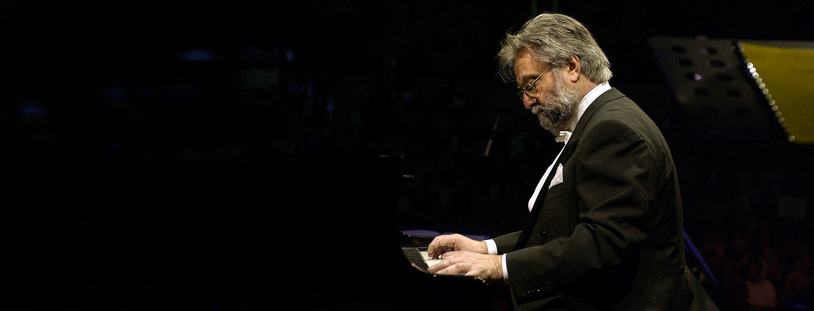
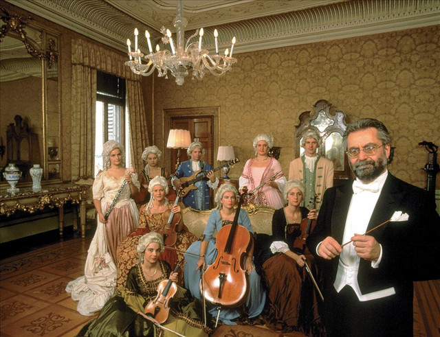

Il Maestro
Gian Piero Reverberi (Genova, 29 luglio 1939) è un compositore, arrangiatore, direttore d'orchestra e pianista italiano naturalizzato svizzero, fratello di Gian Franco Reverberi.
Tra gli anni settanta e ottanta lavora per artisti come Mina, Ornella Vanoni, Lucio Dalla, Paul Anka, Patty Pravo, Sergio Endrigo e Umberto Balsamo. Nel 1979 fonda il gruppo Rondò Veneziano e raggiunge l'apice del successo vendendo 30 milioni di copie in tutta Europa, con un repertorio di temi originali in stile baroccheggiante su basi ritmiche moderne.
Rondò Veneziano
Rondò Veneziano è un ensemble musicale italiano che si ispira alla musica barocca sposando sonorità del pop e del rock. Il progetto parte nel 1979 da un'idea condivisa di Freddy Naggiar e Gian Piero Reverberi, noto compositore e direttore d'orchestra della scuola genovese.
